Information Gap Analysis
All the figures below are generated using examples/model_analysis/infogap.jl.
Setup
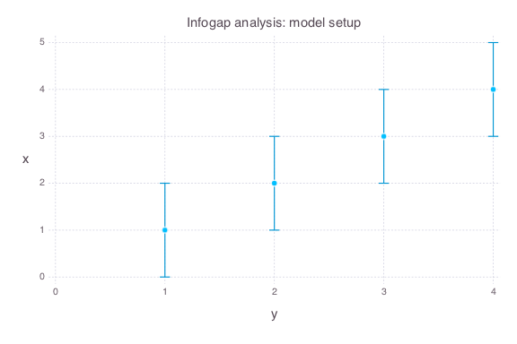
-
There are 4 uncertain observations at times t = [1,2,3,4]
-
There are 4 possible models that can be applied to match the data
-
y(t) = a * t + c -
y(t) = a * t^(1.1) + b * t + c -
y(t) = a * t^n + b * t + c -
y(t) = a * exp(t * n) + b * t + c
-
-
There are 4 unknown model parameters with uniform prior probability functions:
-
a = Uniform(-10, 10) -
b = Uniform(-10, 10) -
c = Uniform(-5, 5) -
n = Uniform(-3, 3)
-
-
The model prediction for t = 5 is unknown and information gap prediction uncertainty needs to be evaluated
-
The horizon of information gap uncertainty
his applied to define the acceptable deviations in the 4 uncertain observations.
Infogap in model y(t) = a * t + c
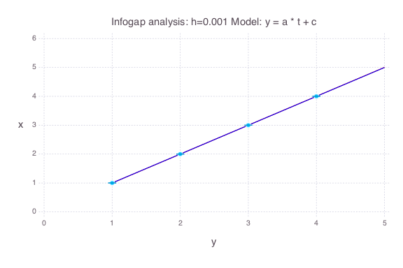
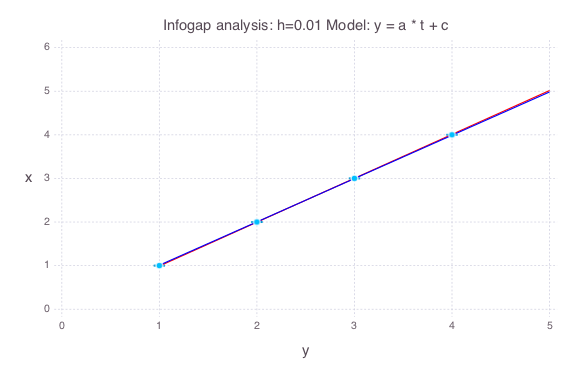
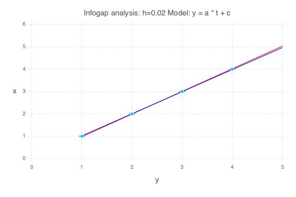
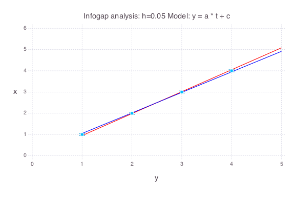
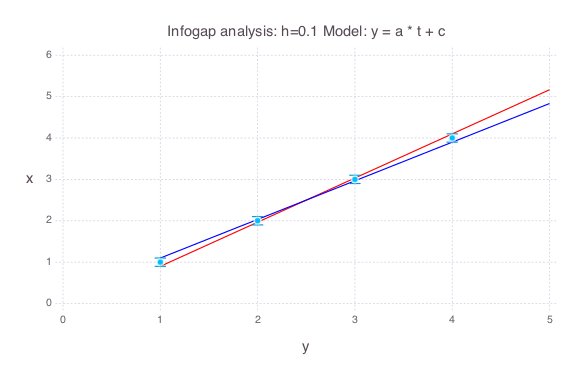
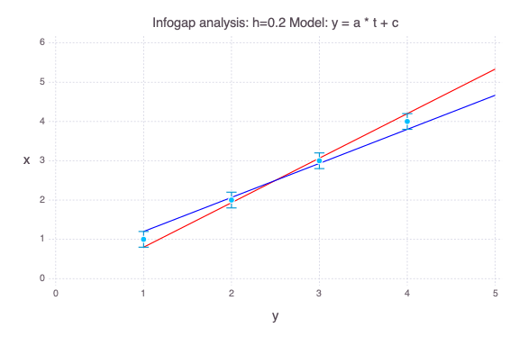
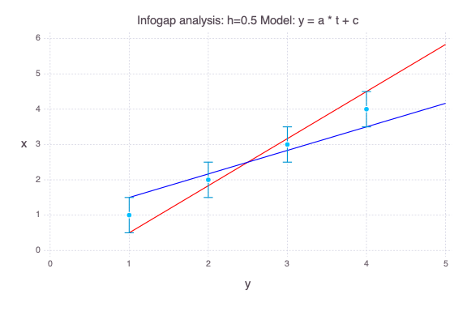
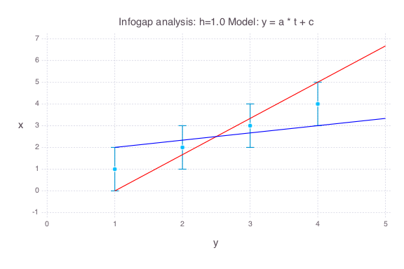
Infogap in model y(t) = a * t^(1.1) + b * t + c
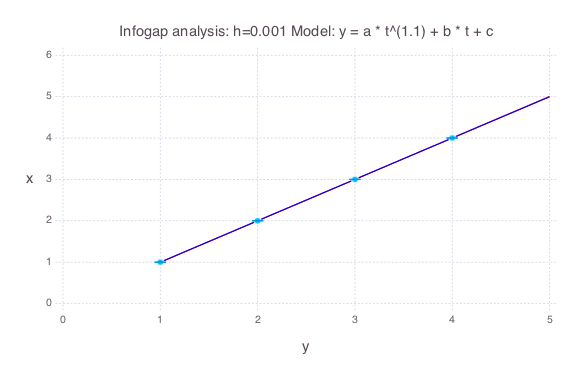
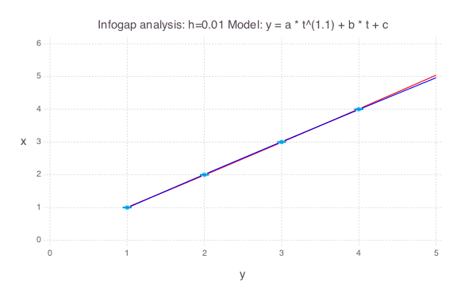
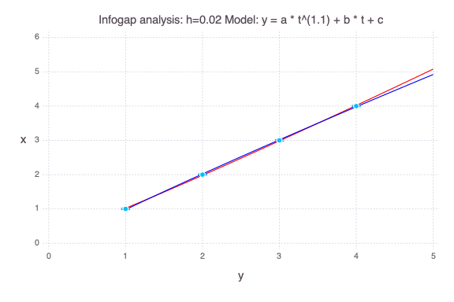
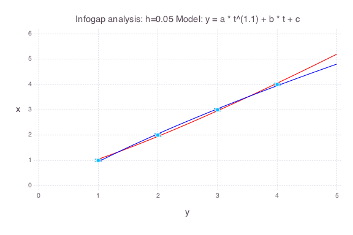

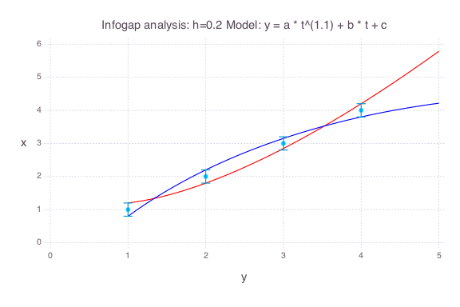

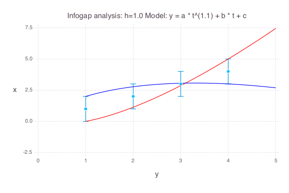
Infogap in model y(t) = a * t^n + b * t + c
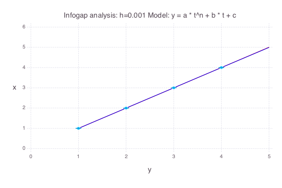
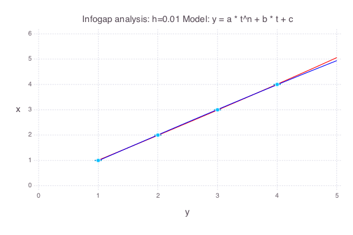

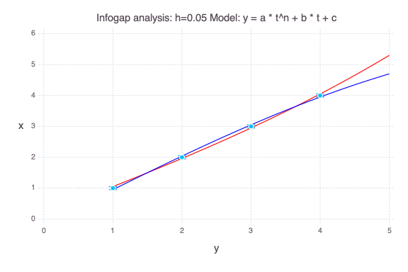
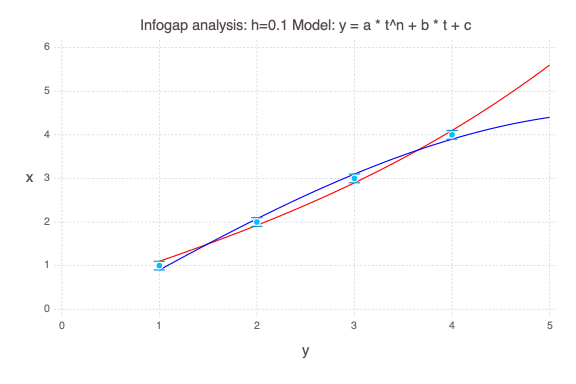
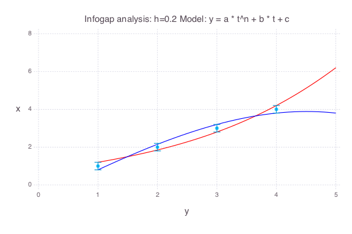
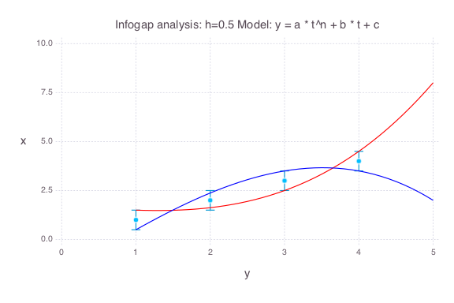
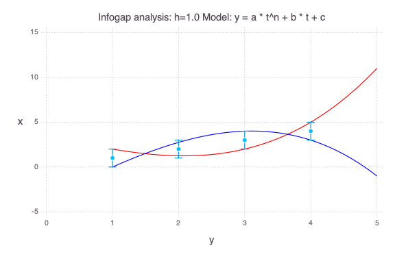
Infogap in model y(t) = a * exp(t * n) + b * t + c
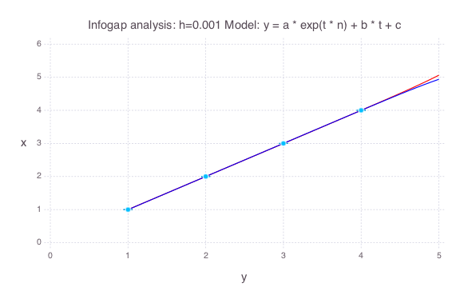
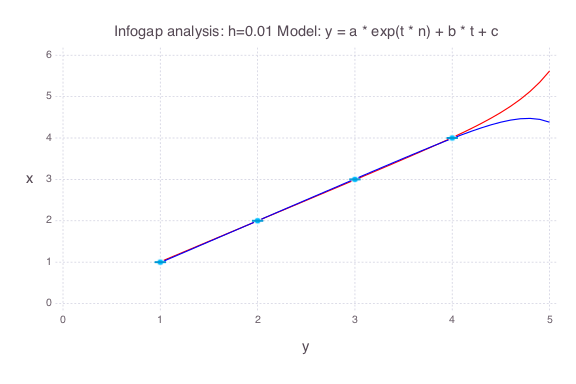
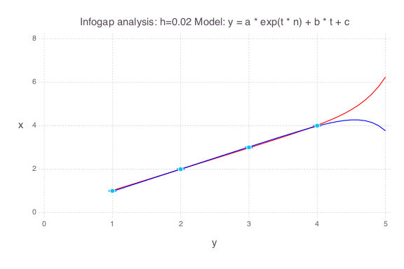
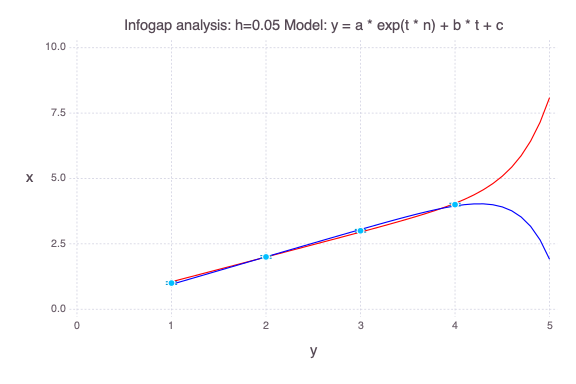
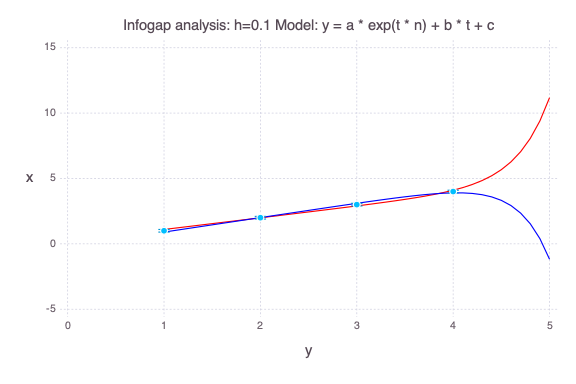
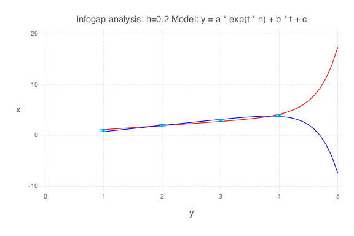
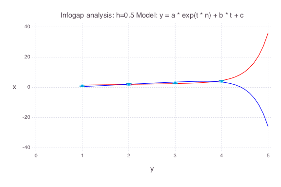
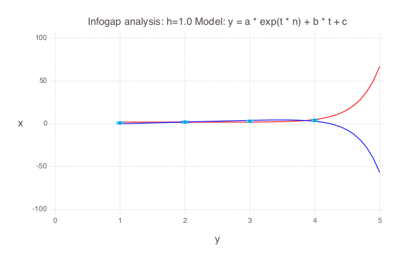
Opportuneness and Robustness of the 4 models
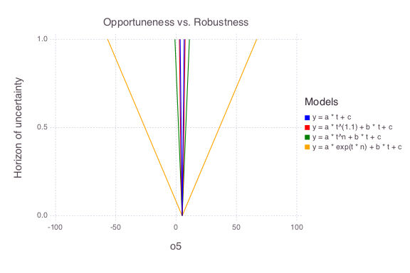